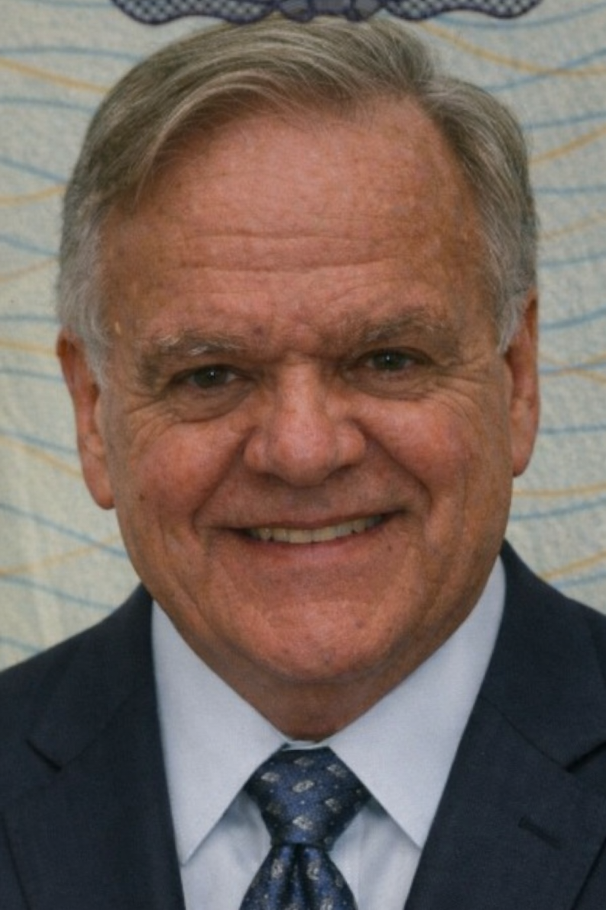

Simons William John
Board Member | Escrow Chapter Oversight & Professional Standards
Bridging professional healthcare and ethical governance, Simons leads with integrity and experience in massage therapy oversight and industry development.
Meet Simons
Join the Nation’s Leading Massage and Bodywork Community
Massage therapists, body practitioners, students, and educators are supported through ISEA’s structured network of professional oversight, resources, and member protection. With meaningful tools designed to enhance credibility, accountability, and career development, ISEA provides the support professionals need at every stage of their journey.
Discover why members expect higher standards and receive greater value through transparent systems, trusted resources, and dedicated professional support.
Join ISEA Today Sign In to Your AccountMembership Tiers & Benefits
Members gain access to a comprehensive range of professional benefits designed to support credibility, protection, and continued development. These include professional liability insurance coverage, complimentary continuing education courses, exclusive partner discounts, and additional member resources that enhance both practice and professionalism.
Certified members receive expanded advantages, including a flexible monthly payment option of twenty dollars, increased access to continuing education opportunities, and enhanced discount programs. This elevated membership tier is structured to provide greater value, long term savings, and reinforced professional standing within the industry.
Student Membership
Student members receive access to essential benefits designed to support learning, early professional development, and a smooth transition into active practice. These benefits include professional liability insurance coverage, complimentary continuing education courses, access to partner discounts, and additional resources that support academic and practical growth.
Certified student members enjoy expanded advantages, including a flexible twenty-dollar monthly payment option, increased continuing education opportunities, and enhanced discount programs. This membership tier is designed to provide affordability, educational enrichment, and early exposure to professional standards within the industry.
Body Practitioner Membership
Body practitioners gain access to a structured range of professional benefits designed to support practice integrity, client trust, and long-term career sustainability. Membership includes professional liability insurance coverage, complimentary continuing education courses, access to exclusive partner discounts, and resources that promote ethical and professional excellence.
Certified body practitioner members receive enhanced benefits, including a flexible twenty-dollar monthly payment option, expanded continuing education access, and increased discount opportunities. This membership tier is designed to strengthen professional credibility, encourage ongoing education, and support practitioners operating within recognized industry standards.
Professional Membership
Professional members receive comprehensive support designed to reinforce credibility, accountability, and operational confidence within their field. Membership benefits include professional liability insurance coverage, access to continuing education programs, exclusive partner discount opportunities, and resources that support ethical practice and professional growth.
Certified professional members are eligible for enhanced benefits, including a flexible twenty-dollar monthly payment option, expanded continuing education access, and increased discount offerings. This membership tier is structured to provide elevated professional standing, long-term value, and alignment with recognized industry standards.